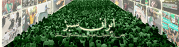

|
|
آغاز به کار سایت ایران سبز: تاریخنگار آنچه خواهیم بود که بر ما گذشت
سه شنبه10 شهریور 1388

سایت جدید ایران سبز توسط جمعی از دانشجویان، هنرمندان و مستندسازان مستقل به راه افتاد. آنان قصد دارند با گردآوری مجموعهای ارزشمند از عکسها و فیلمهای گرفته شده، به ثبت تاریخی وقایع انتخابات ریاست جمهوری ایران کمک کنند و نگذارند این تصاویر به فراموشی سپرده شده و در گذر زمان محو شوند. گردانندگان سایت ایران سبز درباره فعالیت شان چنین نوشته اند:
" دهمین دوره انتخابات ریاست جمهوری ایران برگزار شد. حضور گسترده مردم در پای صندوقهای رأی حکایت از عزم جدی برای تغییر رئیس جمهور پیشین و سیاستهای در پیشگرفته او داشت. اما نتیجه انتخابات با آنچه انتظار میرفت فاصله بسیار داشته و بهت و حیرت مردم از این نتیجه، اعتراضات گستردهای را به همراه آورد.
متأسفانه این اعتراضات مسالمتآمیز به خاک و خون کشیده شد و حکومت ایران تلاش کرد تا با قطع شبکههای اینترنتی و تلفن همراه، ممنوعیت فعالیت و اخراج خبرنگاران خارجی، امکان مخابره اخبار و اطلاعات را به خارج از کشور سلب نماید، تا آنچه را که بر مردم خویش می کرد از چشم جهانیان دور بدارد.
در این شرایط بسیار دشوار، هر ایرانی رسانه ای شد برای انعکاس ظلمی که بر ایران و ایرانی رفت. عکسها و فیلمهای اغلب غیرحرفهای که با دوربین یا تلفن همراه گرفته شده بود، جایگزین تصاویر حرفهای در خبرگزاریهای سراسر جهان گردید. انعکاس جهانی این تصاویر، از طرفی ماهیت مسالمتآمیز جنبش سبز مردم ایران را به جهانیان نشان داد و از طرف دیگر برای حکومت ایران روشن نمود که زیر ذرهبین نگاه منتقدانه افکار عمومی در سطح بین المللی قرار دارد.
حال پس از گذشت زمان و با توجه به پراکندگی اطلاعات و تصاویر موجود، بیم آن میرود که این تصاویر به فراموشی سپرده شده و در گذر زمان محو شوند. اهمیت این قضیه هنگامی مشخص میشود که بداینم اغلب این تصاویر تنها در کامپیوترهای شخصی و بدون هیچ نسخه دومی ذخیره شدهاند. از طرف دیگر هر روزه تعداد بسیار زیادی از تصاویری که بر روی سرورهای عمومی قرار گرفتهاند، پاک شده و یا دچار صدمات جبرانناپذیری میشوند که دیگر هیچ جایگزینی ندارند. هر تصویر پاک شده، برگ سوختهای از کتاب تاریخ است که به فراموشی سپرده میشود.
ما، جمعی از دانشجویان، هنرمندان و مستندسازان مستقل، برآنیم تا با گردآوری مجموعهای ارزشمند از عکسها و فیلمهای گرفته شده، به ثبت تاریخی این وقایع کمک کنیم و اجازه ندهیم که حقایق برای آیندگان انکار شود. این بار ثبت تاریخ را به دیگران وا نمیگذاریم و خود، تاریخنگار آنچه خواهیم بود که بر ما گذشت.
پس از گردآوری مجموعه در نظر داریم، با رعایت قانون حق انتشار برای صاحبان تصاویر، از آنها در نمایشگاههای بینالمللی، ساخت فیلمهای مستند و دیگر فعالیتهای مرتبط استفاده کنیم. ضمن اینکه سعی خواهیم کرد تا این مجموعه، در صورت رضایت فرستنده عکس یا فیلم، در اختیار دیگر گروههای فعال نیز قرار گیرد و کمکی باشد به برگزاری هر چه بهتر تمام این برنامهها در سراسر جهان، تا واقعیت رخدادهای اخیر ایران بر جهانیان روشن گردد."
ایران سبز را در اینجا ببینید